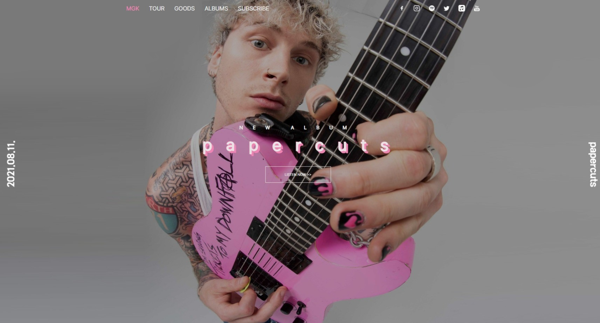
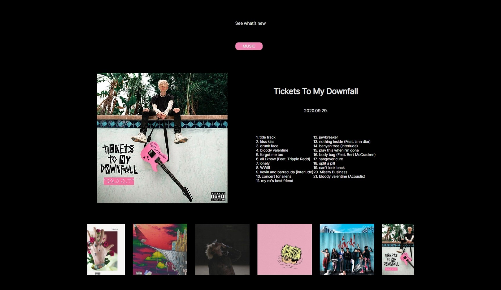
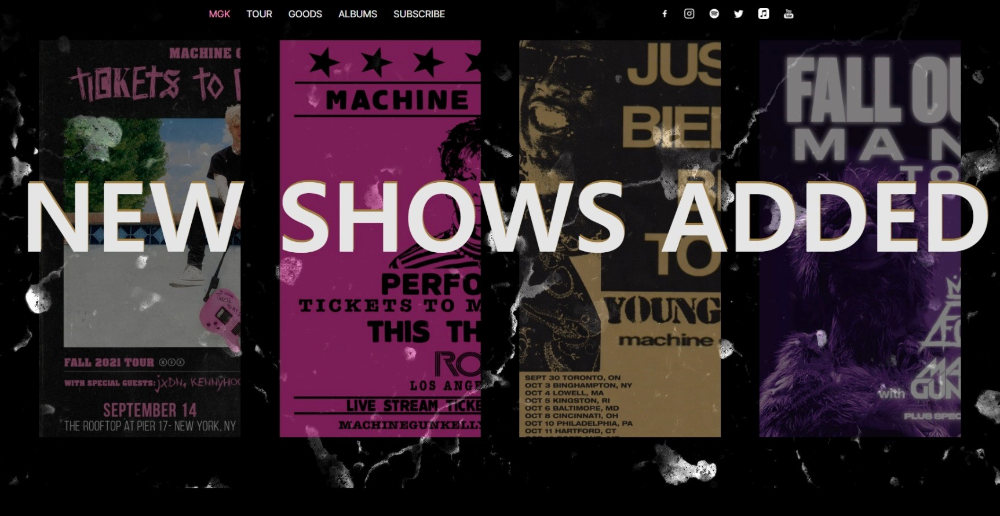
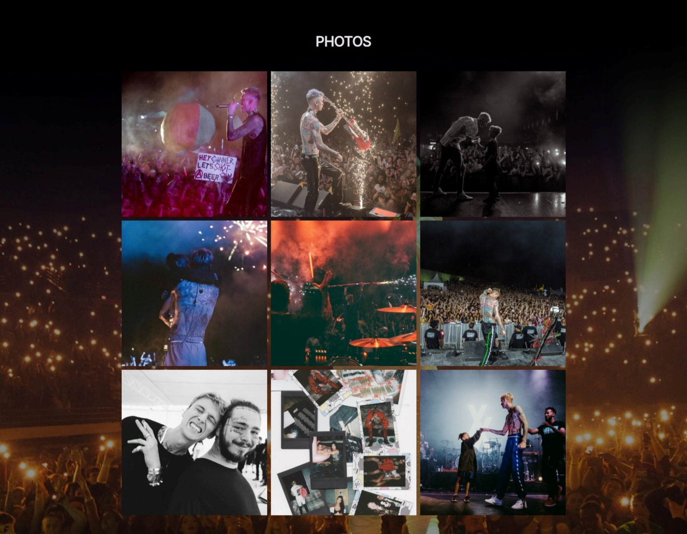

Machine Gun Kelly Website
"2021.11.16. ~ 2021.11.24."
미국의 래퍼이자 가수인 머신 건 켈리의 홈페이지를 제작하였습니다.
최근 발매한 앨범의 콘셉트와 기존 가수의 홈페이지를 참고하여 주로 검은색과 포인트로 핑크색 색상을
사용하였습니다.
메인 페이지와 1개의 서브 페이지로 구성되어 있으며, 모바일 사용자에 맞게 반응형 홈페이지로 제작되었습니다.
상단 메뉴 중 TOUR를 클릭하면 해당 서브 페이지로 이동합니다.



